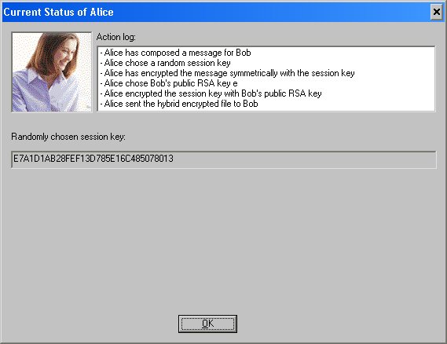

You can access this dialog window by clicking the symbol of Alice in the side-channel attack against the hybrid encryption protocol dialog.
This dialog offers detailed information about Alice.

Next to the portrait of Alice there is a window logging all important actions Alice executed during the side-channel attack. In the text field below you can see the randomly chosen session key Alice used to encrypt the message to Bob.
Remark:
The session key is not visible if Alice did not encrypt the message herself.